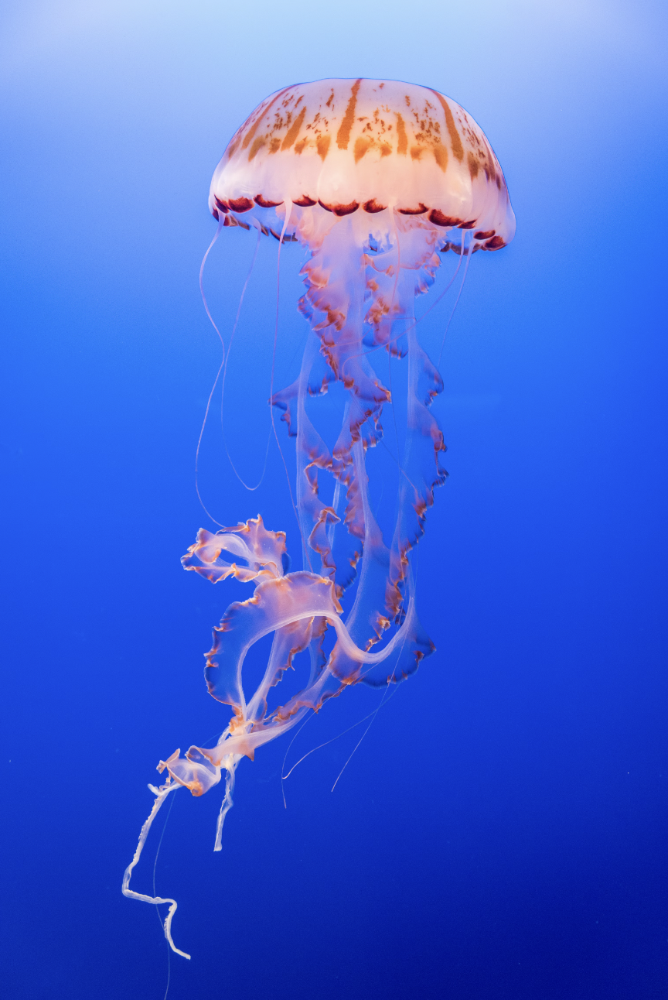

The beauty of the sea
Jellyfish are an essential part of many food chains. By feeding on smaller creatures such as fish larvae and eggs, jellyfish help to control species’ populations and maintain the balance of the ocean’s ecosystem. As well as eating other animals, jellyfish are often prey themselves – even for other jellyfish! Lion’s Mane jellyfish feed on the smaller Moon species, which are often spotted entangled in Lion’s Manes’ tentacles.
Jellyfish are also an important part of the diets of sunfish, spadefish, crabs, and other large crustaceans, as well as marine turtles. Leatherback turtles’ diets consist almost entirely of jellyfish (their favourite is the Lion’s Mane), and they come to UK waters specifically to feed on jellyfish blooms in the summer - so jellyfish are especially important to the survival of these animals. Even after life, jellyfish continue to sustain marine species, with deep-sea creatures like hagfish feasting on jellyfish remains soon after they fall to the bottom of the ocean.
Jellyfish help with nutrient cycling in the ocean – as they drift through different layers of the water column, they help to transport nutrients, such as nitrogen and phosphorous through the sea. These nutrients can then be recycled and used by other marine organisms for growth and survival. Nutrients released by jellyfish through feeding or excretion are also a great source for other organisms, with a study finding that over 10% of nitrogen and almost a quarter of the phosphate requirements needed for the growth of phytoplankton were fulfilled through jellyfish excretion.